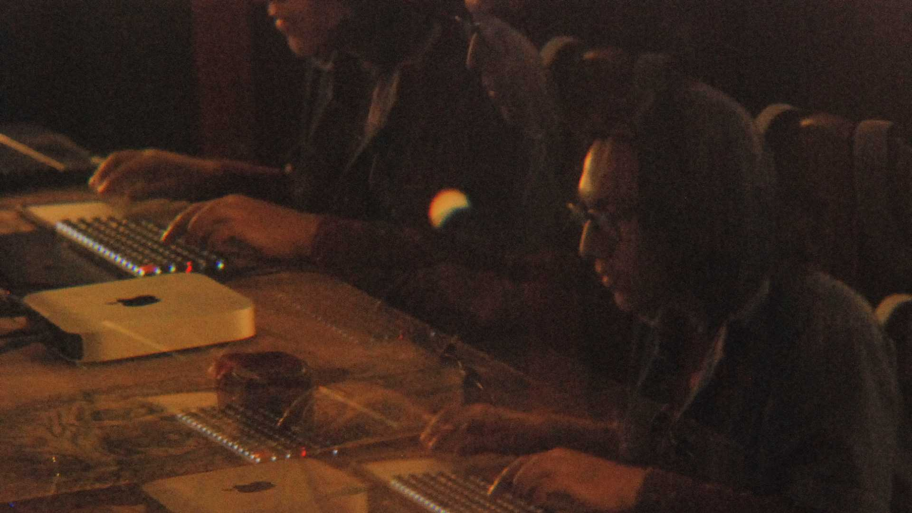
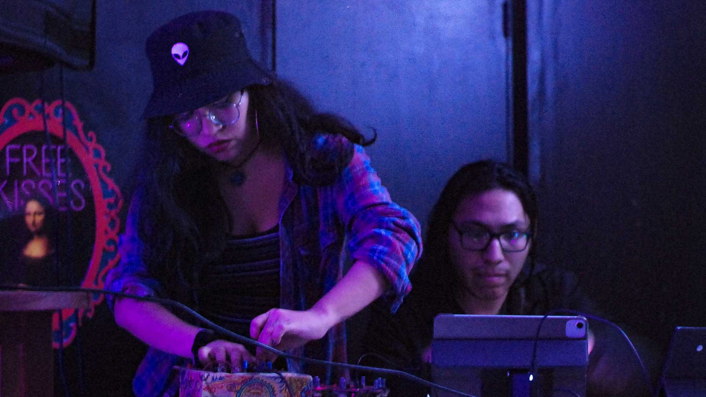
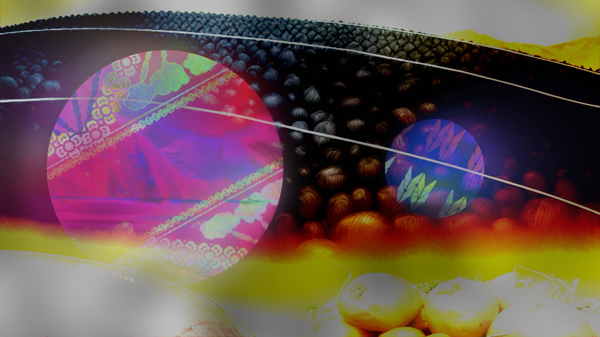

(they/them)
Composer-performer, sound designer and transmedia artist from Peru.
They use digital and computational techniques, along with immersive sound
and new technologies, to explore the tensions between identity,
performativity, and political action.
Collaborating in projects across film, new media, performance and XR, their work is driven by experimental, interactive and socially-engaged practices. Cocompi’s work has been featured in concerts, festivals, and exhibitions in South America, the United States and Europe.
They hold a BA in Music Composition from PUCP (Peru), and an Erasmus scholarship for the Kino Eyes – European Fiction Film Masters program.
Cocompi is part of AMiXR, a Peruvian XR & new media collective focused on tensions between physicality - digitality, heritage - identity, and human - machine relationships from a decolonial, feminist perspective.
(la fórmula) is their experimental collective combining film performance, live coding, artificial intelligence, data visualization, and post-digital lutherie.